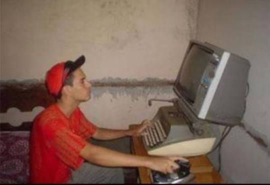
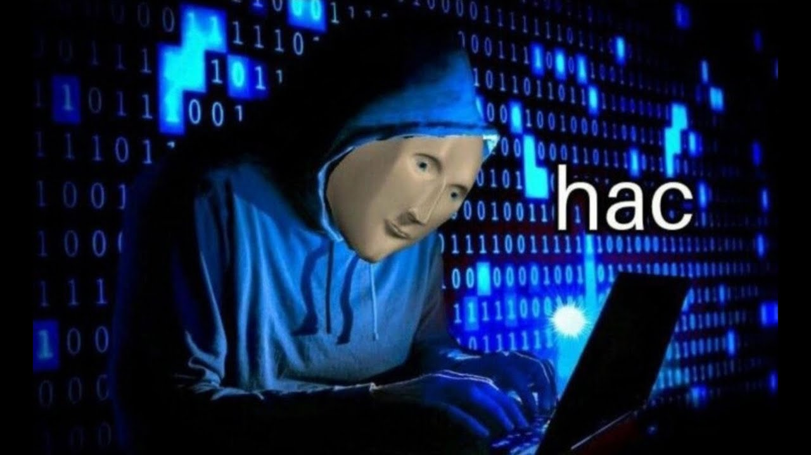

✨ Sobre mim
Tenho 18 anos, gosto de música sacra, de estudar e de desenvolver projetos para o meu portifólio. Atualmente estudo com foco em ser DevOps e estou buscando estágio!
O que me motiva a estudar tecnologia é a vontade de participar de projetos e operações que contribuem para a sociedade.
🛠️ Tecnologias que já vi
- HTML
- CSS
- Java
- Linux
🎮 Meus hobbies favoritos
- Jogar com os amigos
- Sair com a família
- Tocar clarinete e trompete
- Tocar violão
- Ler
- Estudar programação
Galeria dos meus hobbies


🎯Objetivos profissionais
- Curto prazo (6 meses): Ter uma base teórica e prática bem fundamentada em automação e containerização.
- Médio prazo (1-2 anos): Ter muitos projetos pessoais e capacidade para ser um DevOps Junior.
- Longo prazo (3-5 anos): Estar trabalhando enquanto dou monitoria ou começo uma empresa.
🔗 Links para me encontrar
⭐ Top 5 sites que mais acesso
Meus Conhecimentos
| Tecnologia | Nível | Experiência (meses) |
|---|---|---|
| HTML | Básico | 2 meses |
| CSS | Iniciante | 1 mês |
| JavaScript | Em breve | - |
| Java | Intermediário | 8 meses |
| Python | Iniciante | 3 meses |